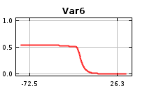
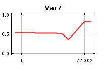
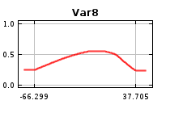
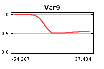
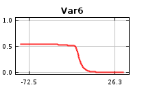
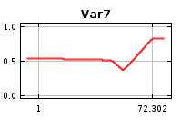
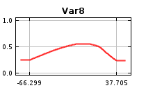
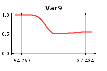

| Cumulative threshold | Cloglog threshold | Description | Fractional predicted area | Training omission rate | Test omission rate | P-value |
|---|
| 1.000 | 0.009 | Fixed cumulative value 1 | 0.154 | 0.000 | 0.000 | 0E0 |
| 5.000 | 0.075 | Fixed cumulative value 5 | 0.072 | 0.010 | 0.009 | 0E0 |
| 10.000 | 0.180 | Fixed cumulative value 10 | 0.049 | 0.042 | 0.040 | 0E0 |
| 0.877 | 0.008 | Minimum training presence | 0.162 | 0.000 | 0.000 | 0E0 |
| 16.668 | 0.352 | 10 percentile training presence | 0.035 | 0.100 | 0.090 | 0E0 |
| 10.661 | 0.196 | Equal training sensitivity and specificity | 0.047 | 0.047 | 0.045 | 0E0 |
| 6.323 | 0.100 | Maximum training sensitivity plus specificity | 0.064 | 0.016 | 0.016 | 0E0 |
| 10.912 | 0.201 | Equal test sensitivity and specificity | 0.046 | 0.049 | 0.046 | 0E0 |
| 6.035 | 0.094 | Maximum test sensitivity plus specificity | 0.065 | 0.015 | 0.012 | 0E0 |
| 1.633 | 0.017 | Balance training omission, predicted area and threshold value | 0.124 | 0.001 | 0.001 | 0E0 |
| 7.306 | 0.120 | Equate entropy of thresholded and original distributions | 0.059 | 0.022 | 0.022 | 0E0 |

 






